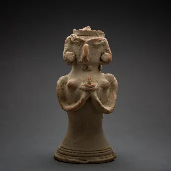
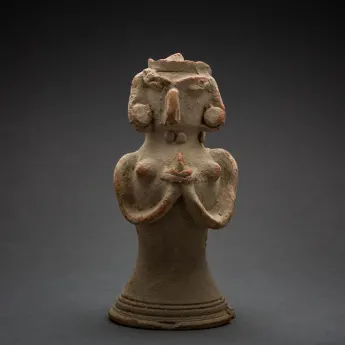

Culture of the Indus Valley Civilization
Daily Life
The Indus Valley Civilization was known for its advanced urban planning, including well-laid-out streets and sophisticated drainage systems. The people engaged in various activities such as farming, crafts, and trade.
Housing
Houses were made of baked bricks, with flat roofs that served as additional living spaces.
Food and Drink
The Indus people were skilled farmers, growing crops like wheat, barley, and rice.
They also hunted and fished, as evidenced by the presence of animal and fish bones in archaeological sites.
Beer and wine were consumed, as indicated by the presence of fermentation vessels and wine presses.
Transportation
The Indus people used camels, elephants, and oxen-drawn carts for transportation.
Religion and Spirituality
The Indus people worshipped a Mother Goddess, as evidenced by female figurines found in excavations.
Art and Architecture
Artifacts from the Indus Valley Civilization include intricate seals, pottery, and statues. The architecture was marked by the construction of large public buildings, such as the Great Bath in Mohenjo-Daro, and residential houses with courtyards.
Trade and Economy
The Indus Valley Civilization had a thriving economy based on trade. Evidence suggests that they traded goods with Mesopotamia and other regions. The economy was also supported by agriculture and craftsmanship.
Social Organization
Society in the Indus Valley Civilization was well-organized. The uniformity in the city planning and artifacts indicates a high level of social cohesion and possibly a centralized administration.
Population and Urbanization
The Indus Valley Civilization was a large and complex society, with cities like Mohenjo-daro and Harappa containing between 30,000 and 60,000 people.
The population of the subcontinent during the civilization’s florescence may have reached 4-6 million people.
Visual Insights
Explore some visual representations of the culture of the Indus Valley Civilization:
 
